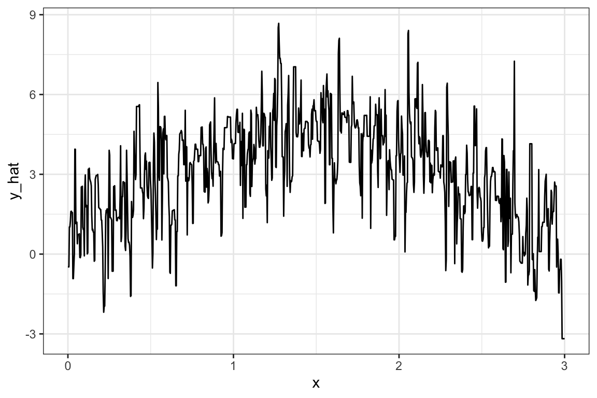

library(data.table)
library(tidyverse)
library(mgcv)
library(caret)
library(parallel)
library(fixest)
library(tidymodels)
library(ranger)5 Bootstrap
5.1 What is it for?
Bootstrap can be used to quantify the uncertainty associated with an estimator. For example, you can use it to estimate the standard error (SE) of a coefficient of a linear model. Since there are closed-form solutions for that, bootstrap is not really bringing any benefits to this case. However, the power of bootstrap comes in handy when you do NOT have a closed form solution. We will first demonstrate how bootstrap works using a linear model, and then apply it to a case where no-closed form solution is available.
5.2 How it works
Packages to load for replication
Here are the general steps of a bootstrap:
- Step 1: Sample the data with replacement (You can sample the same observations more than one times. You draw a ball and then you put it back in the box.)
- Step 2: Run a statistical analysis to estimate whatever quantity you are interested in estimating
- Repeat Steps 1 and 2 many times and store the estimates
- Derive uncertainty measures from the collection of estimates obtained above
Let’s demonstrate this using a very simple linear regression example.
Here is the data generating process:
set.seed(89343)
N <- 100
x <- rnorm(N)
y <- 2 * x + 2 * rnorm(N)We would like to estimate the coefficient on \(x\) by applying OLS to the following model:
\[ y = \alpha + \beta_x + \mu \]
We know from the econometric theory class that the SE of \(\hat{\beta}_{OLS}\) is \(\frac{\sigma}{\sqrt{SST_x}}\), where \(\sigma^2\) is the variance of the error term (\(\mu\)) and \(SST_x = \sum_{i=1}^N (x_i - \bar{x})^2\) (\(\bar{x}\) is the mean of \(x\)).
mean_x <- mean(x)
sst_x <- ((x-mean(x))^2) %>% sum()
(
se_bhat <- sqrt(4 / sst_x)
)[1] 0.217933So, we know that the true SE of \(\hat{\beta}_{OLS}\) is 0.217933. There is not really any point in using bootstrap in this case, but this is a good example to see if bootstrap works or not.
Let’s implement a single iteration of the entire bootstrap steps (Steps 1 and 2).
#=== set up a dataset ===#
data <-
data.table(
y = y,
x = x
)Now, draw observations with replacement so the resulting dataset has the same number of observations as the original dataset.
num_obs <- nrow(data)
#=== draw row numbers ===#
(
row_indices <- sample(seq_len(num_obs), num_obs, replace = TRUE)
) [1] 29 56 39 83 52 66 70 19 4 34 28 34 81 32 9 95 99 86 4 79 30 15 41 97 43
[26] 89 60 41 16 19 66 96 34 91 86 67 75 28 74 50 71 95 74 87 58 27 9 65 80 41
[51] 71 64 21 47 45 77 97 94 72 50 23 10 33 45 14 17 82 56 33 75 70 63 78 81 64
[76] 16 84 90 2 17 5 46 53 37 93 85 72 63 10 35 42 20 70 49 74 32 25 73 76 32Use the sampled indices to create a bootstrapped dataset:
You could also use bootstraps() from the rsample package.
temp_data <- data[row_indices, ]Now, apply OLS to get a coefficient estimate on \(x\) using the bootstrapped dataset.
lm(y ~ x, data = temp_data)$coefficient["x"] x
2.040957 This is the end of Steps 1 and 2. Now, let’s repeat this step 1000 times. First, we define a function that implements Steps 1 and 2.
get_beta <- function(i, data)
{
num_obs <- nrow(data)
#=== sample row numbers ===#
row_indices <- sample(seq_len(num_obs), num_obs, replace = TRUE)
#=== bootstrapped data ===#
temp_data <- data[row_indices, ]
#=== get coefficient ===#
beta_hat <- lm(y ~ x, data = temp_data)$coefficient["x"]
return(beta_hat)
}Now repeat get_beta() many times:
beta_store <-
lapply(
1:1000,
function(x) get_beta(x, data)
) %>%
unlist()Calculate standard deviation of \(\hat{\beta}_{OLS}\),
sd(beta_store)[1] 0.2090611Not, bad. What if we make the number of observations to 1000 instead of 100?
set.seed(67343)
#=== generate data ===#
N <- 1000
x <- rnorm(N)
y <- 2 * x + 2 * rnorm(N)
#=== set up a dataset ===#
data <-
data.table(
y = y,
x = x
)
#=== true SE ===#
mean_x <- mean(x)
sst_x <- sum(((x-mean(x))^2))
(
se_bhat <- sqrt(4 / sst_x)
)[1] 0.06243842#=== bootstrap-estimated SE ===#
beta_store <-
lapply(
1:1000,
function(x) get_beta(x, data)
) %>%
unlist()
sd(beta_store)[1] 0.06147708This is just a single simulation. So, we cannot say bootstrap works better when the number of sample size is larger only from these experiments. But, it is generally true that bootstrap indeed works better when the number of sample size is larger.
5.3 A more complicated example
Consider a simple production function (e.g., yield response functions for agronomists):
\[ y = \beta_1 x + \beta_2 x^2 + \mu \]
- \(y\): output
- \(x\): input
- \(\mu\): error
The price of \(y\) is 5 and the cost of \(x\) is 2. Your objective is to identify the amount of input that maximizes profit. You do not know \(\beta_1\) and \(\beta_2\), and will be estimating them using the data you have collected. Letting \(\hat{\beta_1}\) and \(\hat{\beta_2}\) denote the estimates of \(\beta_1\) and \(\beta_2\), respectively, the mathematical expression of the optimization problem is:
\[ Max_x 5(\hat{\beta}_1 x + \hat{\beta}_2 x^2) - 2 x \]
The F.O.C is
\[ 5\hat{\beta}_1 + 10 \hat{\beta}_2 x - 2 = 0 \]
So, the estimated profit-maximizing input level is \(\hat{x}^* = \frac{2-5\hat{\beta}_1}{10\hat{\beta}_2}\). What we are interested in knowing is the SE of \(x^*\). As you can see, it is a non-linear function of the coefficients, which makes it slightly harder than simply getting the SE of \(\hat{\beta_1}\) or \(\hat{\beta_2}\). However, bootstrap can easily get us an estimate of the SE of \(\hat{x}^*\). The bootstrap process will be very much the same as the first bootstrap example except that we will estimate \(x^*\) in each iteration instead of stopping at estimating just coefficients. Let’s work on a single iteration first.
Alternatively, you could use the delta method, which lets you find an estimate of the SE of a statistics that is a non-linear function of estimated coefficients.
Here is the data generating process:
set.seed(894334)
N <- 1000
x <- runif(N) * 3
ey <- 6 * x - 2 * x^2
mu <- 2 * rnorm(N)
y <- ey + mu
data <-
data.table(
x = x,
y = y,
ey = ey
)Under the data generating process, here is what the production function looks like:
Code
ggplot(data = data) +
geom_line(aes(y = ey, x = x)) +
theme_bw()
num_obs <- nrow(data)
row_indices <- sample(seq_len(num_obs), num_obs, replace = TRUE)
boot_data <- data[row_indices, ]
reg <- lm(y ~ x + I(x^2), data = boot_data)Now that we have estimated \(\beta_1\) and \(\beta_2\), we can easily estimate \(x^*\) using its analytical formula.
(
x_star <- (2 - 5 * reg$coef["x"])/ (10 * reg$coef["I(x^2)"])
) x
1.40625 We can repeat this many times to get a collection of \(x^*\) estimates and calculate the standard deviation.
get_x_star <- function(i)
{
row_indices <- sample(seq_len(num_obs), num_obs, replace = TRUE)
boot_data <- data[row_indices, ]
reg <- lm(y ~ x + I(x^2), data = boot_data)
x_star <- (2 - 5 * reg$coef["x"])/ (10 * reg$coef["I(x^2)"])
}x_stars <-
lapply(
1:1000,
get_x_star
) %>%
unlist()Here is the histogram:
Code
hist(x_stars, breaks = 30)
So, it seems to follow a normal distribution. You can get standard deviation of x_stars as an estimate of the SE of \(\hat{x}^*\).
sd(x_stars)[1] 0.01783721You can get the 95% confidence interval (CI) like below:
quantile(x_stars, prob = c(0.025, 0.975)) 2.5% 97.5%
1.364099 1.430915 5.4 One more example with a non-parametric model
We now demonstrate how we can use bootstrap to get an estimate of the SE of \(\hat{x}^*\) when we use random forest (RF) as our regression method instead of OLS. When RF is used, we do not have any coefficients like the OLS case above. Even then, bootstrap allows us to estimate the SE of \(\hat{x}^*\).
RF will be covered in Section 6.2. Please take a quick glance at what RF is to confirm this point. No deep understanding of RF is necessary to understand the significance of bootstrap in this example. Please also note that there is no benefit in using RF in this example because we have only one variable and semi-parametric approach like gam() will certainly do better. RF is used here only because it does not give you coefficient estimates (there are no coefficients in the first place for RF) like linear models.
The procedure is exactly the same except that we use RF to estimate the production function and also that we need to conduct numerical optimization as no analytical formula is available unlike the case above.
We first implement a single iteration.
#=== get bootstrapped data ===#
row_indices <- sample(seq_len(num_obs), num_obs, replace = TRUE)
boot_data <- data[row_indices, ]
#=== train RF ===#
reg_rf <- ranger(y ~ x, data = boot_data)Once you train RF, we can predict yield at a range of values of \(x\), calculate profit, and then pick the value of \(x\) that maximizes the estimated profit.
#=== create series of x values at which yield will be predicted ===#
eval_data <- data.table(x = seq(0, 3, length = 1000))
#=== predict yield based on the trained RF ===#
eval_data[, y_hat := predict(reg_rf, eval_data)$predictions]Here is what the estimated production function looks like:
Code
#=== plot ===#
ggplot(data = eval_data) +
geom_line(aes(y = y_hat, x = x)) +
theme_bw()
Well, it is very spiky (we need to tune hyper-parameters using KCV. But, more on this later. The quality of RF estimation has nothing to do with the goal of this section).
We can now predict profit at each value of \(x\).
#=== calculate profit ===#
eval_data[, profit_hat := 5 * y_hat - 2 * x]
head(eval_data) x y_hat profit_hat
1: 0.000000000 -0.4807528 -2.403764
2: 0.003003003 -0.4807528 -2.409770
3: 0.006006006 -0.4807528 -2.415776
4: 0.009009009 1.0193781 5.078872
5: 0.012012012 1.0193781 5.072866
6: 0.015015015 1.2466564 6.203252The only thing left for us to do is find the \(x\) value that maximizes profit.
eval_data[which.max(profit_hat), ] x y_hat profit_hat
1: 1.273273 8.675033 40.82862Okay, so 1.2732733 is the \(\hat{x}^*\) from this iteration.
As you might have guessed already, we can just repeat this step to get an estimate of the SE of \(\hat{x}^*_{RF}\).
get_x_star_rf <- function(i)
{
print(i) # progress tracker
#=== get bootstrapped data ===#
row_indices <- sample(seq_len(num_obs), num_obs, replace = TRUE)
boot_data <- data[row_indices, ]
#=== train RF ===#
reg_rf <- ranger(y ~ x, data = boot_data)
#=== create series of x values at which yield will be predicted ===#
eval_data <- data.table(x = seq(0, 3, length = 1000))
#=== predict yield based on the trained RF ===#
eval_data[, y_hat := predict(reg_rf, eval_data)$predictions]
#=== calculate profit ===#
eval_data[, profit_hat := 5 * y_hat - 2 * x]
#=== find x_star_hat ===#
x_star_hat <- eval_data[which.max(profit_hat), x]
return(x_star_hat)
}x_stars_rf <-
mclapply(
1:1000,
get_x_star_rf,
mc.cores = 12
) %>%
unlist()
#=== Windows user ===#
# library(future.apply)
# plan("multisession", workers = detectCores() - 2)
# x_stars_rf <-
# future_lapply(
# 1:1000,
# get_x_star_rf
# ) %>%
# unlist()Here are the estimate of the SE of \(\hat{x}^*_{RF}\) and 95% CI.
sd(x_stars_rf)[1] 0.3949154quantile(x_stars_rf, prob = c(0.025, 0.975)) 2.5% 97.5%
0.5465465 2.0570571 As you can see, the estimation of \(x^*\) is much more inaccurate than the previous OLS approach. This is likely due to the fact that we are not doing a good job of tuning the hyper-parameters of RF (but, again, more on this later).
This conclude the illustration of the power of using bootstrap to estimate the uncertainty of the statistics of interest (\(x^*\) here) when the analytical formula of the statistics is non-linear or not even known.
5.5 Bag of Little Bootstraps
Bag of little bootstraps (BLB) is a variant of bootstrap that has similar desirable statistical properties as bootstrap, but is more (computer) memory friendly (Kleiner et al. 2014).
When the sample size is large (say 1GB) bootstrap is computationally costly both in terms of time and memory because the data of the same size is bootstrapped for many times (say, 1000 times). BLB overcomes this problem.
Suppose you are interested in \(\eta\) (e.g., standard error, confidence interval) of the estimator \(\hat{\theta}\). Further, let \(N\) denoted the sample size of the training data.
BLB works as follows:
- Split the dataset into \(S\) sets of subsamples of size \(B\) so that \(s \times B = N\) without replacement.
- For each of the subsample, bootstrap \(N\) ( not \(B\) ) samples with replacement \(M\) times, and find \(\eta\) (call it \(\eta_s\)) for each of the subsample sets.
- Average \(\hat{\eta}_s\) to get \(\hat{eta}\).
5.5.1 Demonstrations
Let’s go back to the example discussed in Section 5.3, where the goal is to identify the confidence interval (\(\eta\)) of the economically optimal input rate (\(\theta\)).
Step 1:
Step 1: Split the dataset into \(S\) sets of subsamples of size \(B\) so that \(s \times B = N\) without replacement
Here, we set \(S\) at 5, so \(B = 200\).
N <- nrow(data)
S <- 5
(
subsamples <-
data[sample(seq_len(N), N), ] %>%
.[, subgroup := rep(1:S, each = N/S)] %>%
split(.$subgroup)
)$`1`
x y ey subgroup
1: 2.3733159 5.30861102 2.974639 1
2: 1.6275776 3.09436504 4.467448 1
3: 0.2254504 -0.00443899 1.251047 1
4: 1.9988901 3.51795123 4.002217 1
5: 2.6819931 2.65018050 1.705785 1
---
196: 0.6356858 1.70404729 3.005922 1
197: 0.5894847 5.41369203 2.841924 1
198: 1.1667444 5.82214614 4.277881 1
199: 0.9570687 4.01145812 3.910451 1
200: 2.6627629 5.73397413 1.795965 1
$`2`
x y ey subgroup
1: 1.8809192 4.57934497 4.2098011 2
2: 0.1314569 -0.61561180 0.7541794 2
3: 2.5253701 1.49742398 2.3972324 2
4: 0.8415726 5.29003218 3.6329468 2
5: 0.4067221 3.22079460 2.1094867 2
---
196: 0.3281349 5.33737092 1.7534644 2
197: 0.1399768 3.43767708 0.8006737 2
198: 2.6292985 -0.06800098 1.9493698 2
199: 2.3410270 3.73951071 3.0853472 2
200: 2.8142845 -2.75691735 1.0453126 2
$`3`
x y ey subgroup
1: 1.2296299 5.0020342 4.353800036 3
2: 0.8974602 5.2290199 3.773891666 3
3: 1.0734530 1.0161772 4.136115258 3
4: 2.8013991 2.7505559 1.112720709 3
5: 1.5841919 4.9322236 4.485823441 3
---
196: 0.1508607 1.6273472 0.859646069 3
197: 0.6124024 1.8253166 2.924341101 3
198: 2.9990628 -0.4053550 0.005621654 3
199: 2.8691630 -0.9073811 0.750785549 3
200: 1.0579288 6.2074265 4.109146183 3
$`4`
x y ey subgroup
1: 2.3998924 -0.8807641 2.880388 4
2: 1.0257974 6.6735166 4.050264 4
3: 1.1611026 3.5404186 4.270297 4
4: 1.0894566 2.5421898 4.162908 4
5: 0.1975354 0.3857778 1.107172 4
---
196: 0.7921199 7.0038608 3.497812 4
197: 2.6279086 1.9564617 1.955645 4
198: 1.4766912 2.8731862 4.498913 4
199: 0.6217361 2.1170408 2.957305 4
200: 2.0381772 1.8095725 3.920731 4
$`5`
x y ey subgroup
1: 0.5453160 10.3885051 2.677156938 5
2: 1.2077153 1.2218954 4.329139357 5
3: 1.1022868 1.8370493 4.183648383 5
4: 2.9998229 -0.5902619 0.001062293 5
5: 1.8845175 0.8490326 4.204292516 5
---
196: 1.5471997 4.8499174 4.495544367 5
197: 0.5813285 3.7268747 2.812085354 5
198: 1.5839438 7.7635746 4.485906861 5
199: 0.2343757 1.8121762 1.296390509 5
200: 1.9727159 1.9638589 4.053079371 5You could alternatively do this:
fold_data <- vfold_cv(data, v = 5)
subsamples <-
lapply(
1:5,
function(x) fold_data[x, ]$splits[[1]] %>% assessment()
)Steps 2:
- Step 2: For each of the subsample, bootstrap \(N\) ( not \(B\) ) samples with replacement \(M\) times, and find \(\eta\) (call it \(\eta_s\)) for each of the subsample sets.
Instead of creating bootstrapped samples \(M\) times, only one bootstrapped sample from the first subsample is created for now, and then the estimate of \(x^*\) is obtained.
(
boot_data <-
sample(
seq_len(nrow(subsamples[[1]])),
N,
replace = TRUE
) %>%
subsamples[[1]][., ]
) x y ey
1: 2.99982294 -0.5902619 0.001062293
2: 0.36841088 0.6414166 1.939012145
3: 0.36841088 0.6414166 1.939012145
4: 1.52659488 4.1079431 4.498585425
5: 2.68124652 1.4721212 1.709313320
---
996: 2.20473789 2.7760518 3.506689002
997: 0.67635816 6.1153578 3.143228227
998: 1.89649565 6.3148116 4.185582404
999: 0.03379467 -0.2925077 0.200483835
1000: 2.51539783 1.7992266 2.437934475We can now train a linear model using the bootstrapped data and calculate \(\hat{x}^*\) based on it.
reg <- lm(y ~ x + I(x^2), data = boot_data)
(
x_star <- (2 - 5 * reg$coef["x"])/ (10 * reg$coef["I(x^2)"])
) x
1.367197 We can loop this process over all the \(100\) (\(M = 100\)) bootstrapped data from the fist subsample set. Before that, let’s define a function that conducts a single implementation of bootstrapping and estimating \(x^*\) from a single subsample set.
get_xstar_boot <- function(subsample)
{
boot_data <-
sample(
seq_len(nrow(subsample)),
N,
replace = TRUE
) %>%
subsample[., ]
reg <- lm(y ~ x + I(x^2), data = boot_data)
x_star <- (2 - 5 * reg$coef["x"])/ (10 * reg$coef["I(x^2)"])
return(x_star)
}This is a single iteration.
get_xstar_boot(subsamples[[1]]) x
1.400198 Now, let’s repeat this 100 (\(M = 100\)) times.
M <- 100
xstar_hats <-
lapply(
1:M,
function(x) get_xstar_boot(subsamples[[1]])
) %>%
unlist()We can now get the 95% confidence interval of \(\hat{x}^*\).
cf_lower <- quantile(xstar_hats, prob = 0.025)
cf_upper <- quantile(xstar_hats, prob = 0.975) So, [1.36848876286897,1.44320748221065] is the 95% confidence interval estimate from the first subsample set. We repeat this for the other subsample sets and average the 95% CI from them (get_CI() defined on the side).
This function find the 95% confidence interval (\(\eta\)) from a single subsample set.
get_CI <- function(subsample){
xstar_hats <-
lapply(
1:M,
function(x) get_xstar_boot(subsamples[[1]])
) %>%
unlist()
cf_lower <- quantile(xstar_hats, prob = 0.025)
cf_upper <- quantile(xstar_hats, prob = 0.975)
return_data <-
data.table(
cf_lower = cf_lower,
cf_upper = cf_upper
)
return(return_data)
}(
ci_data <-
lapply(
subsamples,
function(x) get_CI(x)
) %>%
rbindlist()
) cf_lower cf_upper
1: 1.374328 1.443085
2: 1.368850 1.443649
3: 1.365456 1.444492
4: 1.368362 1.440309
5: 1.362626 1.445573Steps 3:
By averaging the lower and upper bounds, we get our estimate of the lower and upper bound of the 95% CI of \(\hat{x}^*\).
ci_data[, .(mean(cf_lower), mean(cf_upper))] V1 V2
1: 1.367924 1.443422Note the estimated CI is very much similar to that from a regular bootstrap obtained in Section 5.3.
References
Kleiner, Ariel, Ameet Talwalkar, Purnamrita Sarkar, and Michael I. Jordan. 2014. “A Scalable Bootstrap for Massive Data.” Journal of the Royal Statistical Society: Series B (Statistical Methodology) 76 (4): 795–816. https://doi.org/10.1111/rssb.12050.